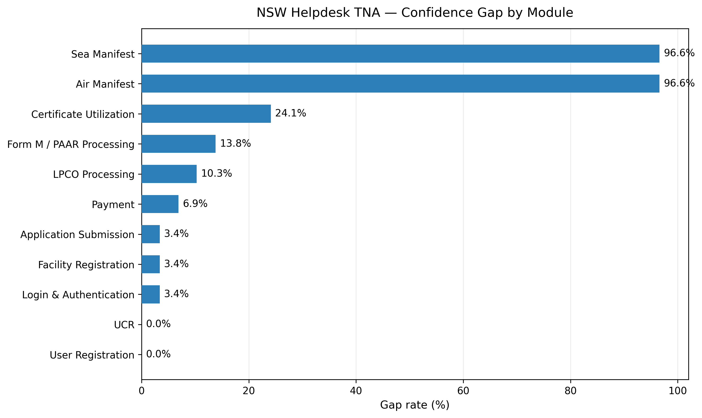
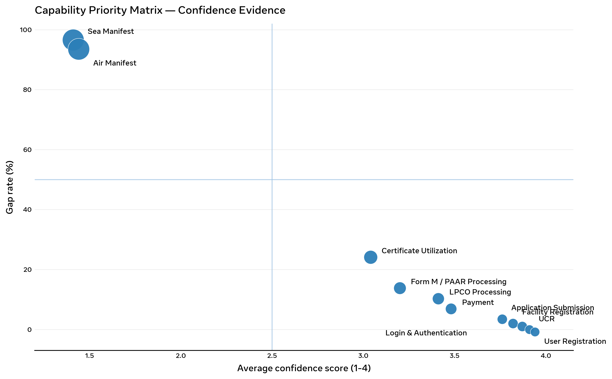
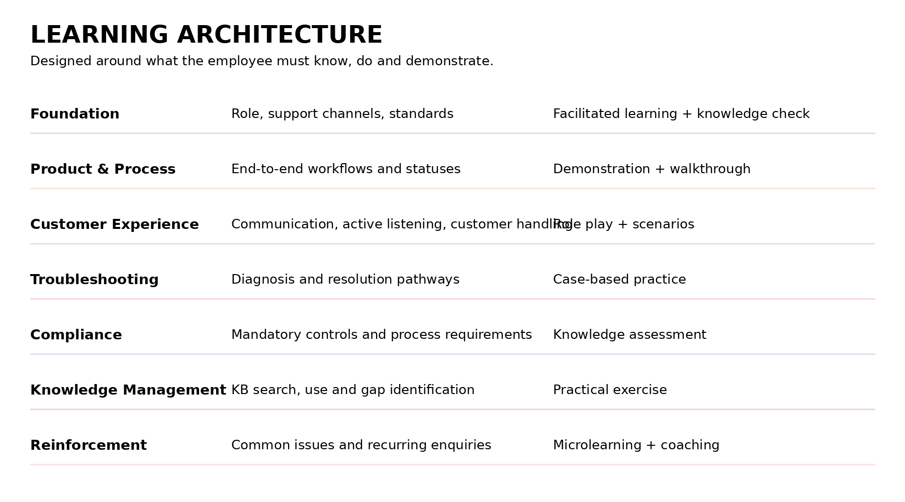
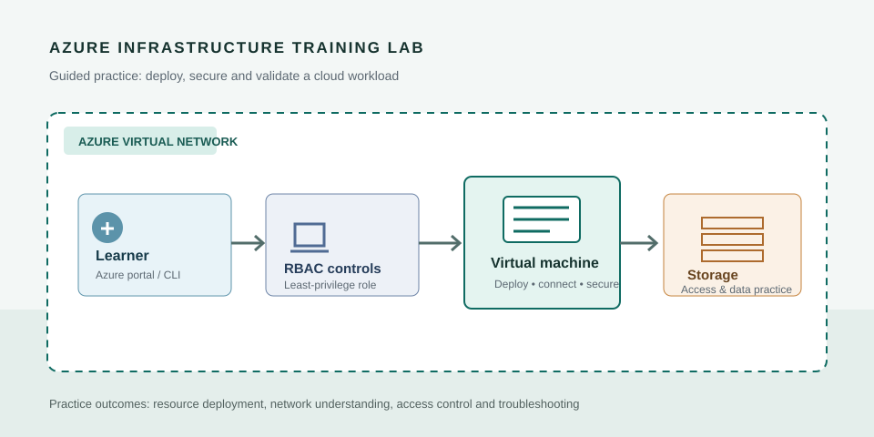
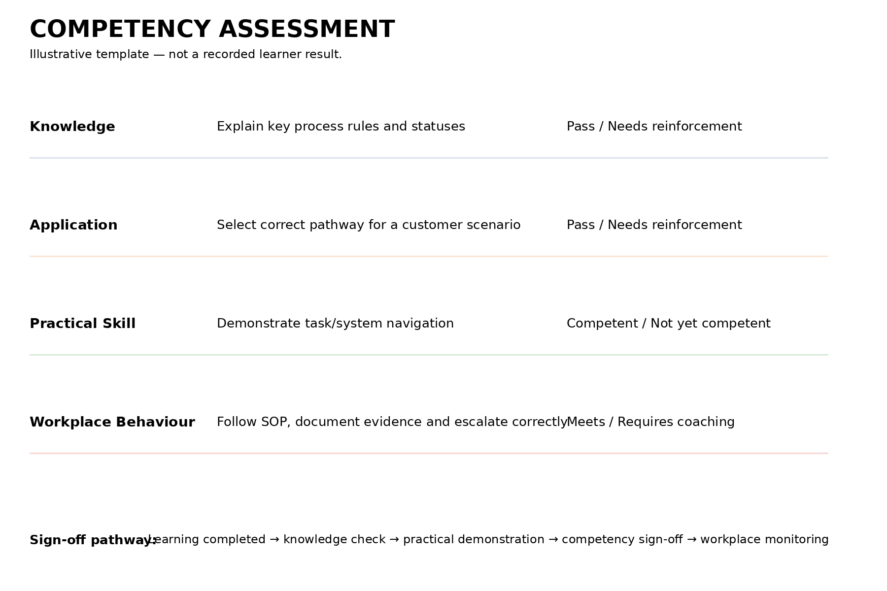
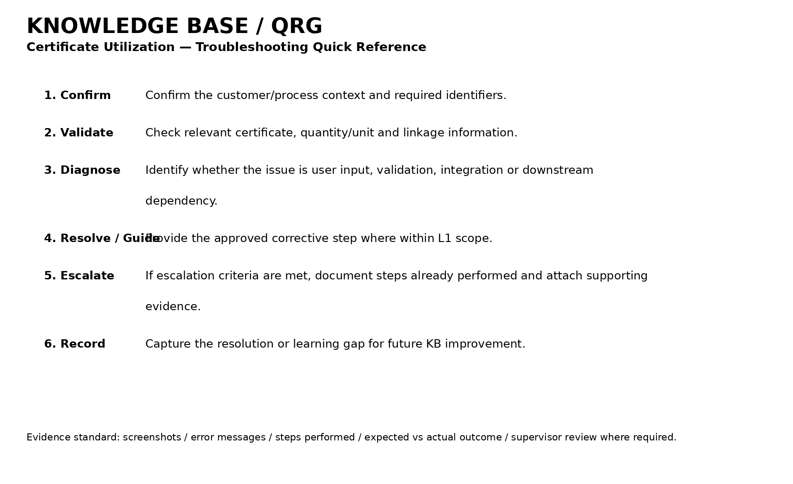
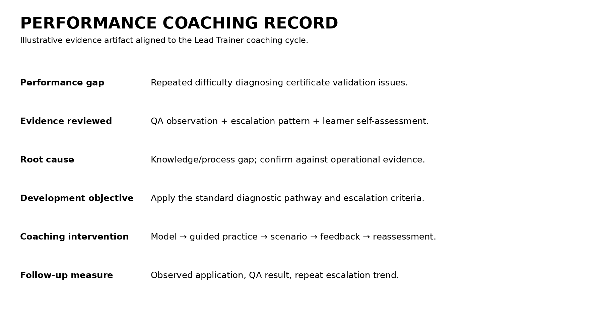

Training Needs Analysis
Identify knowledge, skill and capability gaps and translate evidence into targeted learning priorities.
I design and deliver practical learning across L&D, technical training, capability development, knowledge management and performance support.
I am a Learning & Development and Technical Training professional with experience designing and delivering learning in complex operational and technology environments.
My approach starts with the performance requirement: identify the capability gap, determine the right intervention, design practical learning, assess application and reinforce capability through coaching and performance support.
From diagnosis to delivery and reinforcement, I can support the learning lifecycle rather than treating training as a standalone event.
Identify knowledge, skill and capability gaps and translate evidence into targeted learning priorities.
Design structured programmes around what employees need to know, do and demonstrate.
Translate technical subjects into practical learning, including Azure infrastructure and cloud technologies.
Use explanation, demonstration, practice, scenarios and knowledge checks to move learners toward application.
Measure knowledge, application and practical skill against the level of performance expected.
Reinforce learning with targeted coaching, job aids, knowledge resources and refresher interventions.
Two complementary experiences demonstrate my ability to work across operational capability and technical enablement.
Lead Trainer — capability development across customer support, product/process learning, assessment, knowledge management and performance support.
Training Needs Analysis → competency and gap analysis → structured product/process learning → assessment and reinforcement → knowledge resources → QA-to-training feedback loop → performance measurement.
Azure Infrastructure Trainer — trained 300+ learners through technical enablement, onboarding, workshops, labs, learning materials, assessment and coaching.
Azure Virtual Machines, Storage, Networking, Identity & Access Management, RBAC, PowerShell, ARM Templates, Terraform, cloud infrastructure and automation.
My technical background means I can work with subject-matter complexity while applying structured learning principles to build practical learner capability.
A learning cycle designed to keep training connected to performance rather than treating delivery as the finish line.
Define the performance or business requirement.
Gather evidence and determine the root cause.
Select an intervention that matches the actual gap.
Create practical learning materials and job aids.
Facilitate with demonstration, practice and scenarios.
Check knowledge and practical application.
Use coaching, knowledge resources and refreshers.
Look for workplace application and performance evidence.
Use evidence to improve the intervention.
The final portfolio should replace claims with anonymised artefacts wherever confidentiality allows.
TNA findings, gap analysis and recommended training priorities.
Self-assessment of 29 representatives. The results indicate knowledge gaps in Air and Sea Manifest, Certificate Utilization and complex cross-system issues.
Priority response: hands-on manifest practice, certificate troubleshooting, integration-error diagnosis and stronger searchable knowledge resources.
Self-assessment findings; validate priorities against QA and operational performance data.


Learning architecture and programme structure.

Azure infrastructure lab scenario for guided technical practice.

Competency assessment rubric.

Knowledge Base quick reference guide.

Performance coaching record and reinforcement example.

Learner feedback, training dashboard or available performance evidence.
Azure administration, infrastructure solutions and fundamentals.
Security, compliance, identity and cybersecurity development.
Target positioning: Learning & Development Specialist, Lead Trainer, Training & Capability Specialist and Learning Partner.
Whether you need onboarding, technical enablement, process training, capability development or performance support, let's explore the learning requirement and the right intervention.